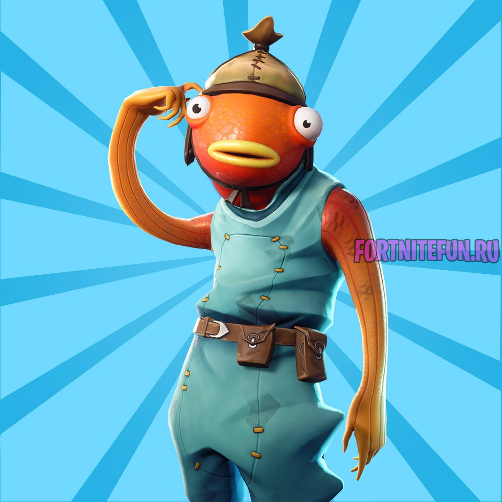
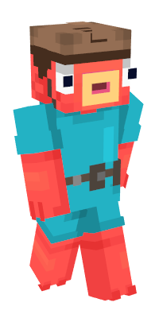

 
Fortnite — это кооперативная песочница на выживание, основными механиками которой являются исследование, сбор ресурсов, строительство укрепленных зданий и борьба с волнами наступающих зомби.
Игроки кооперируются, чтобы собирать предметы, которые они могут использовать для строительства форта днём, а ночью защищаться от зомби.
Строительство является основной механикой, при этом в игре «уйма лута».
Игроки могут строить и редактировать каждую стену своего форта с сеткой 3х3, строить лестницы, крышу и окна, ваяя их в соответствии с той или иной потребностью. Благодаря этим элементом геймплея основатель Epic Games Тим Суини охарактеризовал игру как «смесь Minecraft и Left 4 Dead».
Местность и карта в игре генерируются случайным образом, и игрокам даётся различное оружие дальнего боя, например, дробовик или снайперская винтовка, а также холодное оружие как катана.
В игре представлено четыре различных класса, а именно ниндзя, чужеземец, коммандос и строитель. Разные классы имеют разные способности. Например, строитель быстрее и дешевле строит, а также усиливает сами строения.
А способности к ближнему бою намного лучше у класса ниндзя, чем у других классов. Игроки могут также разрушать объекты окружающей среды и декорации, чтобы получить ресурсы. Когда игрок разбивает что-либо, он играет в мини-игру, нужно бить в подсвечиваемые точки чтобы проходил двойной урон.
Также можно создавать оружие, а навыки персонажа могут быть настроены через улучшения и повышение уровней. Различные части, такие как пол, ловушки, стены и крыша, могут быть сделаны из дерева, камня, или металла. Также будет представлен режим игрок против игрока (PvP), который будет вмещать до ста игроков.
Fortnite: Battle Royale — мультиплатформенная компьютерная игра в жанре королевской битвы, разработанная и выпущенная компанией Epic Games для Windows, MacOS, PlayStation 4 и Xbox One в 2017 году. В 2018 году Epic Games также выпустила версии игры для iOS, Nintendo Switch и Android. Игра распространяется преимущественно посредством цифровой дистрибуции по модели free-to-play; изданием версий игры на физических носителях занимается компания Gearbox Publishing. Fortnite: Battle Royale является ответвлением от компьютерной игры Fortnite, также известной как Fortnite: Save the World — симулятора выживания с возможностью строительства различных сооружений.
Подобно другим играм в жанре королевской битвы, Fortnite: Battle Royale предлагает игрокам принять участие в массовом сражении на обширной карте — поодиночке или группами от двух до четырёх человек, истребляя или избегая персонажей других игроков до тех пор, пока на карте не останется только один победитель. Игра подталкивает игроков к взаимодействию, постепенно уменьшая доступную им «безопасную» зону; выход за её пределы приведёт к потере здоровья и гибели персонажа. В ходе игры игроки должны искать разбросанные по карте оружие и предметы, чтобы получить преимущество над соперниками. Fortnite: Battle Royale заимствует из Fortnite возможность строительства сооружений — игроки могут разрушать различные объекты и строения в игре и использовать полученные материалы для строительства новых. Игра в ограниченных пределах позволяет игрокам с разных платформ — персональных компьютеров, приставок и мобильных устройств — играть на одной карте друг с другом.
Идея Fortnite: Battle Royale возникла после выхода королевской битвы PlayerUnknown's Battlegrounds, добившейся огромной популярности в 2017 году. Видя быстрый рост числа игроков и коммерческий успех этой игры, Epic Games первоначально воссоздала аналогичный режим в составе игры Fortnite, а потом и выпустила отдельную версию игры. В то время как игра сама по себе бесплатна, разработчик получает доход от микротранзакций, и для этого используется общая между Fortnite и Fortnite: Battle Royale виртуальная валюта V-Bucks